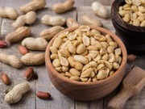

Lentejas
La planta de la lenteja forma parte de la familia de las leguminosas, así las lentejas son legumbres que ofrecen posibilidades nutritivas y culinarias importantísimas.
Sus orígenes se sitúan en el extremo Oriente, aproximadamente por el norte de Siria o suroeste de Turquía.
Son ricas en ácido fólico, hierro, potasio y magnesio. Combinadas con cereales, proveen una calidad de proteína similar a la de las carnes.
Garbanzos
Es una especie de leguminosa. Se trata de la semilla de una planta con flores blancas o violetas que desarrollan una vaina,
en cuyo interior se encontran dos o tres garbanzos como máximo.
El origen del cultivo del garbanzo se localiza en el Suroeste de Turquía. Desde allí se extendió a la región mediterránea y más tarde a África, fundamentalmente Etiopía.
Tiene muchos minerales, sobre todo fósforo, hierro, magnesio y es especialmente rico en vitaminas B1, B6 y ácido fólico.
Es muy proteico y rico en fibra.
Amaranto
Aunque es considerado por algunos como un cereal, es en realidad la fruta que nace de una planta con hojas anchas y abundantes de color brillante, espigas y flores púrpuras, naranjas, rojas y doradas.
Uno de los cultivos más antiguos de América. Utilizado en la alimentación de las culturas precolombinas como Incas, mayas y aztecas.
Posee una cantidad extraordinaria de proteínas, minerales como hierro, fibra, calcio, magnesio, zinc, fósforo, cobre, manganeso, potasio, vitaminas del Complejo B, así como vitaminas A y C.
Quinoa
La quinoa es una semilla, sin embargo se le considera como un pseudocereal, porque comparte características con los cereales; se clasifica como un grano integral.
Nativa de Sudamérica, la quinoa fue cultivada por las personas que habitaban los Andes, principalmente en Perú y Bolivia.
Es rica en minerales esenciales, como el hierro, en magnesio, fósforo, manganeso, cinc, cobre y potasio. También aporta vitamina B2 y B3.
A ello hay que sumar que presenta una elevada cantidad de proteínas.
Cacahuate

Botanicamente es una leguminosa, pero desde un punto de vista nutricional, se considera que pertenecen al grupo de los frutos secos.
El fruto de la planta de cacahuate penetra en el suelo para madurar, así el cacahuate se extrae del suelo.
Es conocido desde hace miles de años y su origen se encuentra en las regiones tropicales de Suramérica, principalmente en perú y brasil.
el cacahuate es muy nutritivo pues contiene vitaminas del complejo B, hierro, zinc, vitamina E, proteínas y lípidos.
Espirulina
Es un alga unicelular, de color azul verdoso, que se reproduce en zonas desérticas, sobre todo, en aquellos lugares en los que el agua es alcalina.
Era el alimento tradicional de los Aztecas en México, la filtraban directamente del lago Texcoco.
Tambiénf ue consumida (en forma de galleta) por el pueblo Kanembú, en el Chad.
Es rica en vitaminas y minerales. Contiene hierro, calcio, fósforo, magnesio, vitamina A, vitamina K, vitamina E y vitamina B2, B3 y B6.
Además, contiene proteínas de la más alta calidad.